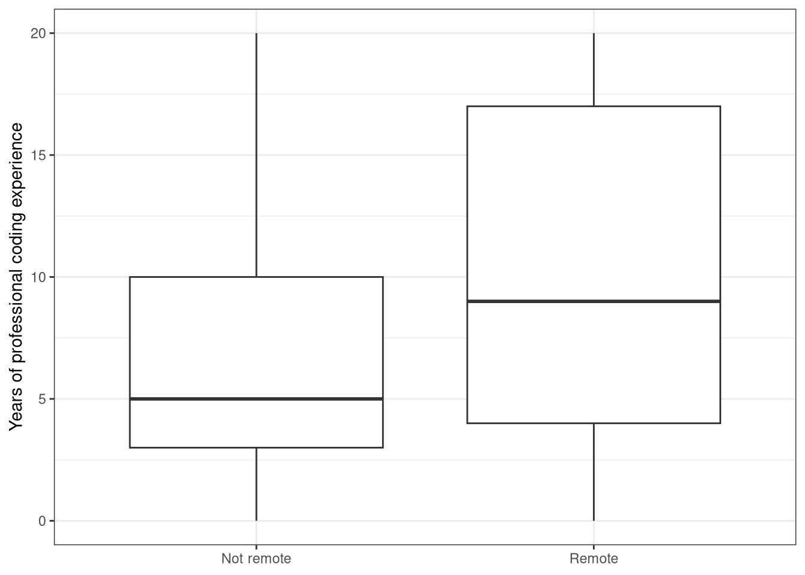
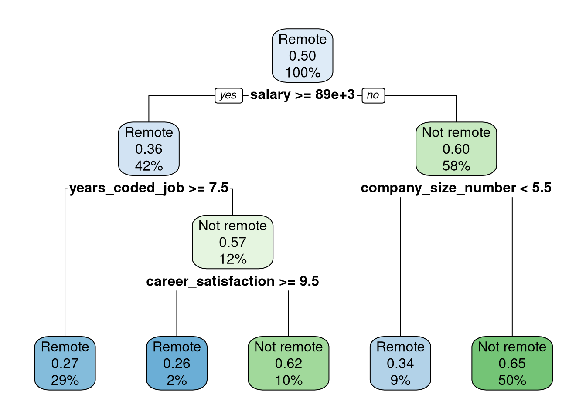

library(tidyverse)
library(tidymodels)
tidymodels_prefer()
stack_overflow <- read_csv("../Data/stack_overflow.csv")Stack Overflow Developer Survey
Essential copying and pasting from stack Overflow
In Not mtcars Again, you practiced how to build regression models to predict fuel efficiency. Our second case study uses a dataset from the Stack Overflow Developer Survey.
Stack Overflow is the world’s largest, most trusted online community for developers (I bet you have used it!) and every year there is a large survey of developers, to learn about developers’ opinions on different technologies, work habits, and so forth.
In this case study, you are going to use data from the annual Developer Survey to build predictive models. First, you’ll do exploratory data analysis to understand what’s in the dataset, and how some of the quantities in the survey are distributed, and then you’ll practice your machine learning skills by training classification models.
Every year, the data for the Stack Overflow Developer Survey is made public, so this is all data that you can access and analyze yourself. I’ve already done some data cleaning and preparation, but we’ll practice some of that in this chapter as well. There are a lot of predictive modeling possibilities in this dataset. Analyze the data yourself!
The specific question we are going to address is what makes a developer more likely to work remotely. Developers can work in their company offices or they can work remotely, and it turns out that there are specific characteristics of developers, such as the size of the company that they work for, how much experience they have, or where in the world they live, that affect how likely they are to be a remote developer.
That is what you are going to model! One of the things you’ll notice right away about this dataset, however, is that the proportion of developers who are remote and those who work in an office is not balanced. This kind of class imbalance can have a significant negative impact on model performance, so we are going to have to cope with it. We will need to preprocess our data before we model it.
stack_overflow |>
count(remote)# A tibble: 2 × 2
remote n
<chr> <int>
1 Not remote 6273
2 Remote 718Let’s start by exploring this new dataset, and then splitting our data into testing and training sets.
Choose an appropriate model
In this case study, you will predict whether a developer works remotely or not (i.e., in their company offices) from characteristics of these developers, like experience and size of the company. In this analysis, we will assume that a software developer can either work remotely, or not. What kind of model will you build? To predict group membership or discrete class labels, use classification models.
Anytime you are planning to implement modeling, it is always a good idea to explore your dataset. Start off this modeling analysis by checking out how many remote and non-remote developers you have to work with, where they live, and how much experience they have.
Instructions
- Take a look at the
stack_overflowobject.
# Take a look at stack_overflow
glimpse(stack_overflow)Rows: 6,991
Columns: 22
$ respondent <dbl> 3, 15, 18, 19, 26, 55, 62, 71, 73…
$ country <chr> "United Kingdom", "United Kingdom…
$ salary <dbl> 113750.000, 100000.000, 130000.00…
$ years_coded_job <dbl> 20, 20, 20, 3, 16, 4, 1, 1, 20, 2…
$ open_source <lgl> TRUE, FALSE, TRUE, FALSE, FALSE, …
$ hobby <lgl> TRUE, TRUE, TRUE, TRUE, TRUE, FAL…
$ company_size_number <dbl> 10000, 5000, 1000, 10000, 10000, …
$ remote <chr> "Not remote", "Remote", "Remote",…
$ career_satisfaction <dbl> 8, 8, 9, 5, 7, 9, 5, 8, 8, 10, 7,…
$ data_scientist <lgl> FALSE, FALSE, FALSE, FALSE, FALSE…
$ database_administrator <lgl> FALSE, FALSE, FALSE, FALSE, FALSE…
$ desktop_applications_developer <lgl> FALSE, FALSE, FALSE, FALSE, FALSE…
$ developer_with_stats_math_background <lgl> FALSE, FALSE, FALSE, FALSE, FALSE…
$ dev_ops <lgl> FALSE, FALSE, TRUE, FALSE, FALSE,…
$ embedded_developer <lgl> FALSE, TRUE, TRUE, FALSE, FALSE, …
$ graphic_designer <lgl> FALSE, FALSE, FALSE, FALSE, FALSE…
$ graphics_programming <lgl> FALSE, FALSE, FALSE, FALSE, FALSE…
$ machine_learning_specialist <lgl> FALSE, FALSE, FALSE, FALSE, FALSE…
$ mobile_developer <lgl> FALSE, FALSE, FALSE, FALSE, FALSE…
$ quality_assurance_engineer <lgl> FALSE, FALSE, TRUE, FALSE, FALSE,…
$ systems_administrator <lgl> FALSE, FALSE, FALSE, FALSE, FALSE…
$ web_developer <lgl> FALSE, FALSE, TRUE, TRUE, TRUE, T…- In the calls to
count(), check out the distributions forremotestatus first, and thencountry.
# First count for `remote`
stack_overflow |>
count(remote, sort = TRUE)# A tibble: 2 × 2
remote n
<chr> <int>
1 Not remote 6273
2 Remote 718# then count for `country`
stack_overflow |>
count(country, sort = TRUE)# A tibble: 5 × 2
country n
<chr> <int>
1 United States 3486
2 United Kingdom 1270
3 Germany 950
4 India 666
5 Canada 619Instructions
Use the appropriate column from the data set so you can plot a boxplot with remote status on the x-axis and professional experience on the y-axis.
ggplot(data = stack_overflow,
aes(x = remote, y = years_coded_job)) +
geom_boxplot() +
labs(x = NULL,
y = "Years of professional coding experience") +
theme_bw()
Training and testing data
Before you deal with the imbalance in the remote/not remote classes, first split your data into training and testing sets. You create subsets of your data for training and testing your model for the same reasons you did before: to reduce overfitting and obtain a more accurate estimate for how your model will perform on new data.
Instructions
Create a data split that divides the original data into 80%/20% sections and about evenly divides the sections between the different classes of remote.
stack_overflow <- stack_overflow |>
mutate(remote = factor(remote, levels = c("Remote", "Not remote"))) |>
mutate_if(is.character, factor)Create
stack_split:For the first argument to
initial_split(), use a value forpropof 0.8.For the second argument to
initial_split(), stratify the split byremotestatus.
# Create stack_select dataset
stack_select <- stack_overflow |>
select(-respondent)
# Split the data into training and testing sets
set.seed(1234)
stack_split <- stack_select |>
initial_split(prop = 0.8,
strata = remote)
stack_train <- training(stack_split)
stack_test <- testing(stack_split)
glimpse(stack_train)Rows: 5,592
Columns: 21
$ country <fct> United Kingdom, United States, Ge…
$ salary <dbl> 113750.000, 175000.000, 64516.129…
$ years_coded_job <dbl> 20, 16, 4, 1, 13, 7, 17, 1, 1, 10…
$ open_source <lgl> TRUE, FALSE, FALSE, FALSE, FALSE,…
$ hobby <lgl> TRUE, TRUE, FALSE, TRUE, TRUE, TR…
$ company_size_number <dbl> 10000, 10000, 1000, 5000, 20, 20,…
$ remote <fct> Not remote, Not remote, Not remot…
$ career_satisfaction <dbl> 8, 7, 9, 5, 7, 8, 9, 10, 5, 8, 7,…
$ data_scientist <lgl> FALSE, FALSE, FALSE, FALSE, FALSE…
$ database_administrator <lgl> FALSE, FALSE, FALSE, FALSE, FALSE…
$ desktop_applications_developer <lgl> FALSE, FALSE, FALSE, FALSE, FALSE…
$ developer_with_stats_math_background <lgl> FALSE, FALSE, FALSE, FALSE, FALSE…
$ dev_ops <lgl> FALSE, FALSE, FALSE, FALSE, FALSE…
$ embedded_developer <lgl> FALSE, FALSE, FALSE, FALSE, FALSE…
$ graphic_designer <lgl> FALSE, FALSE, FALSE, FALSE, FALSE…
$ graphics_programming <lgl> FALSE, FALSE, FALSE, FALSE, FALSE…
$ machine_learning_specialist <lgl> FALSE, FALSE, FALSE, FALSE, FALSE…
$ mobile_developer <lgl> FALSE, FALSE, FALSE, FALSE, FALSE…
$ quality_assurance_engineer <lgl> FALSE, FALSE, FALSE, FALSE, FALSE…
$ systems_administrator <lgl> FALSE, FALSE, FALSE, FALSE, FALSE…
$ web_developer <lgl> FALSE, TRUE, TRUE, TRUE, TRUE, FA…glimpse(stack_test)Rows: 1,399
Columns: 21
$ country <fct> United States, United States, Ger…
$ salary <dbl> 82500.000, 65000.000, 53763.441, …
$ years_coded_job <dbl> 3, 1, 4, 1, 14, 1, 7, 9, 4, 20, 6…
$ open_source <lgl> FALSE, FALSE, TRUE, TRUE, FALSE, …
$ hobby <lgl> TRUE, TRUE, FALSE, FALSE, TRUE, T…
$ company_size_number <dbl> 10000, 20, 5000, 10, 20, 10000, 1…
$ remote <fct> Not remote, Not remote, Not remot…
$ career_satisfaction <dbl> 5, 8, 7, 9, 7, 8, 7, 6, 5, 10, 10…
$ data_scientist <lgl> FALSE, FALSE, FALSE, FALSE, FALSE…
$ database_administrator <lgl> FALSE, FALSE, FALSE, FALSE, TRUE,…
$ desktop_applications_developer <lgl> FALSE, FALSE, FALSE, FALSE, FALSE…
$ developer_with_stats_math_background <lgl> FALSE, FALSE, FALSE, FALSE, FALSE…
$ dev_ops <lgl> FALSE, FALSE, FALSE, FALSE, TRUE,…
$ embedded_developer <lgl> FALSE, FALSE, FALSE, FALSE, FALSE…
$ graphic_designer <lgl> FALSE, FALSE, FALSE, FALSE, FALSE…
$ graphics_programming <lgl> FALSE, FALSE, FALSE, FALSE, FALSE…
$ machine_learning_specialist <lgl> FALSE, FALSE, FALSE, FALSE, FALSE…
$ mobile_developer <lgl> FALSE, FALSE, FALSE, FALSE, FALSE…
$ quality_assurance_engineer <lgl> FALSE, FALSE, FALSE, FALSE, FALSE…
$ systems_administrator <lgl> FALSE, FALSE, FALSE, FALSE, TRUE,…
$ web_developer <lgl> TRUE, TRUE, TRUE, TRUE, TRUE, TRU…Dealing with imbalanced data
You just took this data about which developers work remotely and which do not, and split it into testing and training sets. Before we go any further, we need to talk about the class imbalance in our dataset.
It’s good that we’re going to talk about class imbalance because it comes up a lot in real life. In many practical, real-world situations, there are a lot more of one kind of category in a dataset than another. In our example here, there are about ten times more non-remote developers than there are remote developers. What can happen in a situation like this is that a machine learning model will always predict the majority class or otherwise exhibit poor performance on the metrics that we care about.
Class imbalance
is a common problem!
often negatively affects the performance of your model 🙀
stack_overflow |>
count(remote)# A tibble: 2 × 2
remote n
<fct> <int>
1 Remote 718
2 Not remote 6273This is in fact what happens with our dataset here (I know because I tested it out ✅) so we need to do something to address this imbalance. There are a variety of options available to you, which vary from quite simple to more complex, and we’re going to start with a simple option.
In this case study, we’re going to implement downsampling, also known as undersampling. With this approach, we randomly remove observations from the majority class until it’s the same size as the minority class and both classes can have the same effect on the machine learning model we’re training.
Are we really going to throw out a large percentage of our data here?! 😱 Yes! We do this because such an approach can be helpful at producing a useful model that can recognize both classes, instead of only one.
Downsampling
Remove some of the majority class so it has less effect on the predictive model.
Randomly remove examples from the majority class until it is the same size as the minority class.
In our case study, there are roughly ten times more non-remote developers compared to the remote developers.
When we implement downsampling, we remove some of the non-remote developers until the proportion is equal and the classes are balanced. This approach is simple to implement and understand, but there are other more complex approaches to class imbalance available as well.
Implementing downsampling
library(themis)
stack_recipe <- recipe(remote ~ ., data = stack_train) |>
step_downsample(remote)Downsampling is an example of a preprocessing step for modeling. In tidymodels, you can preprocess your data using recipes. The recipe shown above has one preprocessing step (downsampling, that comes from an extra add-on package called themis), but you can implement many steps on one dataset during preprocessing. There are an enormous number of different kinds of preprocessing you can do, from creating indicator variables to implementing principal component analysis to extracting date features and more.
When you prep() a recipe, you estimate the required parameters from a data set for the preprocessing steps in that recipe (as an example, think about finding the mean and standard deviation if you are centering and scaling).
When you bake() a prepped recipe with new_data = NULL, you get the preprocessed data back out.
You don’t typically need to prep() and bake() recipes when you use tidymodels, but they are helpful functions to have in your toolkit for confirming that recipes are doing what you expect.
Implementing downsampling
stack_prep <- prep(stack_recipe)
bake(stack_prep, new_data = NULL)# A tibble: 1,148 × 21
country salary years_coded_job open_source hobby company_size_number
<fct> <dbl> <dbl> <lgl> <lgl> <dbl>
1 United Kingdom 100000 20 FALSE TRUE 5000
2 United States 130000 20 TRUE TRUE 1000
3 United States 120000 20 TRUE TRUE 100
4 United States 96283 20 TRUE TRUE 1000
5 United States 100297 15 FALSE TRUE 100
6 United States 146000 15 TRUE TRUE 10000
7 United States 50000 15 TRUE TRUE 1
8 United States 160000 11 TRUE TRUE 500
9 United States 103000 15 TRUE TRUE 500
10 United States 115000 8 TRUE FALSE 20
# ℹ 1,138 more rows
# ℹ 15 more variables: career_satisfaction <dbl>, data_scientist <lgl>,
# database_administrator <lgl>, desktop_applications_developer <lgl>,
# developer_with_stats_math_background <lgl>, dev_ops <lgl>,
# embedded_developer <lgl>, graphic_designer <lgl>,
# graphics_programming <lgl>, machine_learning_specialist <lgl>,
# mobile_developer <lgl>, quality_assurance_engineer <lgl>, …When do you balance classes? 🤔
Training set?
Testing set?
Does it make sense to try to change the class imbalance of the test set? No, it does not! 🙅 You want the set test to look like new data that your model will see in the future, so you don’t want to mess with the class balance there; you want to see how your model will perform on imbalanced data, even if you have trained it on artificially balanced data.
All right, we’ve talked about some serious machine learning tools here and it’s time to put them into practice.
Preprocess with a recipe
There are multiple possible approaches to dealing with class imbalance. ⚖️ Here, you will implement downsampling using the step_downsample() function from the themis package.
Instructions
Use a
recipeto preprocess your training data.Downsample this data with respect to the remote status of the developers.
library(themis)
stack_recipe <- recipe(remote ~ ., data = stack_train) |>
step_downsample(remote)
stack_recipeDownsampling
Once your recipe is defined, you can estimate the parameters required to actually preprocess the data, and then extract the processed data. This typically isn’t necessary if you use a workflow() for modeling, but it can be helpful to diagnose problems or explore your preprocessing results.
Instructions
- First,
prep()the recipe.
stack_prep <- prep(stack_recipe)- Then,
bake()the prepped recipe withnew_data = NULLto see the processed training data.
stack_down <- bake(stack_prep, new_data = NULL)
stack_down |>
count(remote)# A tibble: 2 × 2
remote n
<fct> <int>
1 Remote 574
2 Not remote 574
What
bake does…
When you bake() the prepped recipe stack_prep with new_data = NULL, you extract the processed (i.e. balanced) training data.
Understand downsampling
Consider the original data set stack_overflow, the training set that you created stack_train, and the downsampled set you created stack_down. Both stack_overflow and stack_train have almost 10 times as many non-remote developers as remote developers.
How do the remote and non-remote developers in stack_down compare? There are the same number of remote and non-remote developers.
Downsampling in your workflow
We are starting to add more steps into the machine learning workflow. Think about when we implemented downsampling to deal with class imbalance. Which data set did we downsample? The training data. Adjusting class imbalance helps you train a model that performs better.
Predicting remote status
Now that you have understood and implemented downsampling, or undersampling, we can finally get down to the business of building supervised machine learning models to predict which developers work remotely and which do not.
Unlike the first case study, when you built regression models to predict a numeric or continuous variable, in this case study you are going to build classification models, to predict the class: remote or not remote. We are going to stick with two methods to understand and implement classification models, logistic regression and a decision tree.
There are lots of other options, and one of the great characteristics of using tidymodels for predictive modeling is that if you want to try something else, you can extend your work to new model types within the same framework. 💁
We are going to use model specifications from parsnip to set up the models. Notice here that one model is logistic regression while the other is a decision tree.
Logistic Regression
glm_spec <- logistic_reg() |>
set_engine("glm")Decision tree
tree_spec <- decision_tree() |>
set_engine("rpart") |>
set_mode("classification") How do we combine these model specifications with the data preprocessing we need to do from our recipe? 🤔
You have a few options for that, but one straightforward way is to use a workflow(), an object that makes it easier to carry around pieces of, well, modeling workflows! The components of a workflow() go together like LEGO blocks; you add a preprocessor like a recipe or a formula, and a model.
If you don’t add one of those components (for example, stack_wf below) the workflow() holds an empty spot ready for, say, the model. You may find this a convenient way to write your modeling code when you want to fit with the same preprocessor but different model specifications.
stack_wf <- workflow() |>
add_recipe(stack_recipe)
stack_wf |>
add_model(glm_spec)══ Workflow ════════════════════════════════════════════════════════════════════
Preprocessor: Recipe
Model: logistic_reg()
── Preprocessor ────────────────────────────────────────────────────────────────
1 Recipe Step
• step_downsample()
── Model ───────────────────────────────────────────────────────────────────────
Logistic Regression Model Specification (classification)
Computational engine: glm A workflow() can be fit in much the same way a model can, and all the pieces are composable and pipeable. 🎉
stack_wf <- workflow() |>
add_recipe(stack_recipe)
stack_wf |>
add_model(tree_spec) |>
fit(data = stack_train)══ Workflow [trained] ══════════════════════════════════════════════════════════
Preprocessor: Recipe
Model: decision_tree()
── Preprocessor ────────────────────────────────────────────────────────────────
1 Recipe Step
• step_downsample()
── Model ───────────────────────────────────────────────────────────────────────
n= 1148
node), split, n, loss, yval, (yprob)
* denotes terminal node
1) root 1148 574 Remote (0.5000000 0.5000000)
2) salary>=88625 477 170 Remote (0.6436059 0.3563941)
4) years_coded_job>=7.5 338 91 Remote (0.7307692 0.2692308) *
5) years_coded_job< 7.5 139 60 Not remote (0.4316547 0.5683453)
10) career_satisfaction>=9.5 19 5 Remote (0.7368421 0.2631579) *
11) career_satisfaction< 9.5 120 46 Not remote (0.3833333 0.6166667) *
3) salary< 88625 671 267 Not remote (0.3979136 0.6020864)
6) company_size_number< 5.5 100 34 Remote (0.6600000 0.3400000) *
7) company_size_number>=5.5 571 201 Not remote (0.3520140 0.6479860) *Classification models can be evaluated using a confusion matrix. This kind of matrix or table counts which examples were classified correctly and incorrectly.
Train models
Finally! 😁 It’s time to train predictive models for this data set of Stack Overflow Developer Survey responses. We will specify our machine learning models with parsnip, and use workflows for convenience.
Instructions
- Specify a logistic regression model using
logistic_reg().
## Build a logistic regression model
glm_spec <- logistic_reg() |>
set_engine("glm") |>
set_mode("classification")
glm_specLogistic Regression Model Specification (classification)
Computational engine: glm - Build a
workflow()to hold your modeling components.
## Start a workflow (recipe only)
stack_wf <- workflow() |>
add_recipe(stack_recipe)
stack_wf══ Workflow ════════════════════════════════════════════════════════════════════
Preprocessor: Recipe
Model: None
── Preprocessor ────────────────────────────────────────────────────────────────
1 Recipe Step
• step_downsample()- Add your model specification to your
workflow()before fitting.
## Add the model and fit the workflow
stack_glm <- stack_wf |>
add_model(glm_spec) |>
fit(data = stack_train)
# Print the fitted model
stack_glm══ Workflow [trained] ══════════════════════════════════════════════════════════
Preprocessor: Recipe
Model: logistic_reg()
── Preprocessor ────────────────────────────────────────────────────────────────
1 Recipe Step
• step_downsample()
── Model ───────────────────────────────────────────────────────────────────────
Call: stats::glm(formula = ..y ~ ., family = stats::binomial, data = data)
Coefficients:
(Intercept)
2.344e+00
countryGermany
4.407e-01
countryIndia
-8.369e-01
countryUnited Kingdom
2.972e-01
countryUnited States
-3.928e-01
salary
-4.657e-06
years_coded_job
-7.857e-02
open_sourceTRUE
-4.979e-01
hobbyTRUE
-7.738e-02
company_size_number
5.197e-05
career_satisfaction
-9.131e-02
data_scientistTRUE
-4.157e-01
database_administratorTRUE
-2.314e-01
desktop_applications_developerTRUE
3.123e-01
developer_with_stats_math_backgroundTRUE
2.206e-02
dev_opsTRUE
2.462e-01
embedded_developerTRUE
4.575e-02
graphic_designerTRUE
-5.837e-01
graphics_programmingTRUE
-3.108e-01
machine_learning_specialistTRUE
4.030e-01
mobile_developerTRUE
-1.932e-01
quality_assurance_engineerTRUE
2.525e-01
systems_administratorTRUE
-1.001e-01
...
and 6 more lines.Instructions
Build a decision tree model with downsampling.
- Specify a decision tree regression model using
decision_tree().
## Build a decision tree model
tree_spec <- decision_tree() |>
set_engine("rpart") |>
set_mode("classification") - Add your recipe
stack_recipeto yourworkflow().
## Start a workflow (recipe only)
stack_wf <- workflow() |>
add_recipe(stack_recipe)- Fit your workflow, after you have added your model to it.
## Add the model and fit the workflow
stack_tree <- stack_wf |>
add_model(tree_spec) |>
fit(data = stack_train)
# Print the fitted model
stack_tree══ Workflow [trained] ══════════════════════════════════════════════════════════
Preprocessor: Recipe
Model: decision_tree()
── Preprocessor ────────────────────────────────────────────────────────────────
1 Recipe Step
• step_downsample()
── Model ───────────────────────────────────────────────────────────────────────
n= 1148
node), split, n, loss, yval, (yprob)
* denotes terminal node
1) root 1148 574 Remote (0.5000000 0.5000000)
2) salary>=88625 477 170 Remote (0.6436059 0.3563941)
4) years_coded_job>=7.5 338 91 Remote (0.7307692 0.2692308) *
5) years_coded_job< 7.5 139 60 Not remote (0.4316547 0.5683453)
10) career_satisfaction>=9.5 19 5 Remote (0.7368421 0.2631579) *
11) career_satisfaction< 9.5 120 46 Not remote (0.3833333 0.6166667) *
3) salary< 88625 671 267 Not remote (0.3979136 0.6020864)
6) company_size_number< 5.5 100 34 Remote (0.6600000 0.3400000) *
7) company_size_number>=5.5 571 201 Not remote (0.3520140 0.6479860) *- Graph the tree using
rpart.plot()from therpart.plotpackage.
stack_tree |>
extract_fit_engine() |>
rpart.plot::rpart.plot()
Node explanation
Each node in Figure 1 shows:
the predicted class (Remote or Not remote),
the predicted probability of
Not remote,the percentage of observations in the node.
- Display the rules used to create Figure 1.
stack_tree |>
extract_fit_engine() |>
rpart.plot::rpart.rules() ..y
0.26 when salary >= 88625 & years_coded_job < 7.5 & career_satisfaction >= 9.5
0.27 when salary >= 88625 & years_coded_job >= 7.5
0.34 when salary < 88625 & company_size_number < 5.5
0.62 when salary >= 88625 & years_coded_job < 7.5 & career_satisfaction < 9.5
0.65 when salary < 88625 & company_size_number >= 5.5 Confusion matrix
A confusion matrix describes how well a classification model (like the ones you just trained!) performs. A confusion matrix tabulates how many examples in each class were correctly classified by a model. In your case, it will show you how many remote developers were classified as remote and how many non-remote developers were classified as non-remote; the confusion matrix also shows you how many were classified into the wrong categories.
Here you will use the conf_mat() function from yardstick to evaluate the performance of the two models you trained, stack_glm and stack_tree. The models available in your environment were trained on the training data.
Instructions
Print the confusion matrix for the stack_glm model on the stack_test data. If we wanted to compare more than two modeling options, we should definitely create some resampled data sets like we did in the first case study. This case study is already getting long, so let’s stick with the testing data.
Note that the first argument to conf_mat() is truth and the second is estimate.
results <- stack_test |>
bind_cols(predict(stack_glm, stack_test) |>
rename(.pred_glm = .pred_class))
# Confusion matrix for logistic regression model
results |>
conf_mat(truth = remote, estimate = .pred_glm) Truth
Prediction Remote Not remote
Remote 81 419
Not remote 63 836Instructions
Print the confusion matrix for the stack_tree model on the stack_test data.
results <- stack_test |>
bind_cols(predict(stack_tree, stack_test) |>
rename(.pred_tree = .pred_class))
# Confusion matrix for decision tree model
results |>
conf_mat(truth = remote, estimate = .pred_tree) Truth
Prediction Remote Not remote
Remote 78 289
Not remote 66 966results |>
conf_mat(truth = remote, estimate = .pred_tree) |>
summary()# A tibble: 13 × 3
.metric .estimator .estimate
<chr> <chr> <dbl>
1 accuracy binary 0.746
2 kap binary 0.185
3 sens binary 0.542
4 spec binary 0.770
5 ppv binary 0.213
6 npv binary 0.936
7 mcc binary 0.215
8 j_index binary 0.311
9 bal_accuracy binary 0.656
10 detection_prevalence binary 0.262
11 precision binary 0.213
12 recall binary 0.542
13 f_meas binary 0.305Classification model metrics
The conf_mat() function is helpful but often you also want to store specific performance estimates for later, perhaps in a dataframe-friendly form. The yardstick package is built to handle such needs. For this kind of classification model, you might look at the positive or negative predictive value or perhaps overall accuracy.
The models available in your environment, stack_glm and stack_tree were trained on the training data.
Instructions
- Predict values for logistic regression (
stack_glm) and decision tree (stack_tree).
results <- stack_test |>
bind_cols(predict(stack_glm, stack_test) |>
rename(.pred_glm = .pred_class)) |>
bind_cols(predict(stack_tree, stack_test) |>
rename(.pred_tree = .pred_class))
knitr::kable(head(results |> select(.pred_glm, .pred_tree)))| .pred_glm | .pred_tree |
|---|---|
| Not remote | Not remote |
| Not remote | Not remote |
| Not remote | Not remote |
| Not remote | Not remote |
| Remote | Remote |
| Not remote | Not remote |
- Calculate both accuracy and positive predictive value for these two models.
## Calculate accuracy
accuracy(results, truth = remote, estimate = .pred_glm)# A tibble: 1 × 3
.metric .estimator .estimate
<chr> <chr> <dbl>
1 accuracy binary 0.655accuracy(results, truth = remote, estimate = .pred_tree)# A tibble: 1 × 3
.metric .estimator .estimate
<chr> <chr> <dbl>
1 accuracy binary 0.746## Calculate positive predict value
ppv(results, truth = remote, estimate = .pred_glm)# A tibble: 1 × 3
.metric .estimator .estimate
<chr> <chr> <dbl>
1 ppv binary 0.162ppv(results, truth = remote, estimate = .pred_tree)# A tibble: 1 × 3
.metric .estimator .estimate
<chr> <chr> <dbl>
1 ppv binary 0.213